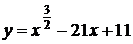

Авторский разбор и аудит предварительны; внешней экспертизы нет.
Модель автора: claude-opus-5-5 (opus; effort=low); в основных частотах: True ·
Впишите правильный ответ.
Найдите точку минимума функции 
КЭС: 4.1 Производная функции. Производные элементарных функций; 4.2 Применение производной к исследованию функций на монотонность и экстремумы. Нахождение наибольшего и наименьшего значения функции на отрезке
196
| ID / вход | Действие | Результат | Локальные KC |
|---|---|---|---|
| s1 · condition | Определить область определения функции с показателем 3/2 | x >= 0 | kc1 |
| s2 · condition | Найти производную функции | y' = (3/2)·x^(1/2) − 21 | kc2 |
| s3 · s1, s2 | Решить уравнение y' = 0 с учётом области определения | √x = 14, x = 196 | kc3 |
| s4 · s2, s3 | Исследовать знак производной слева и справа от критической точки | y' < 0 при 0 < x < 196, y' > 0 при x > 196; x = 196 — точка минимума | kc4 |
[
{
"id": "m1",
"name": "Исследование функции на экстремум с помощью производной",
"step_ids": [
"s1",
"s2",
"s3",
"s4"
]
}
]По степени с дробным рациональным показателем указать допустимые значения основания (неотрицательность или положительность).
{
"local_kc_id": "kc1",
"status": "new_candidate",
"catalog_kc_id": null,
"evidence": [
{
"ref": "step:s1:action",
"quote": "Определить область определения функции с показателем 3/2"
},
{
"ref": "step:s1:result",
"quote": "x >= 0"
}
],
"context_refs": [
"image:assets/3c00d068dcf03a92d0b8e637.gif"
],
"alternatives_checked": [
{
"catalog_kc_id": "literal_a5938e1a7fec",
"reason": "Касается неотрицательности радикандов квадратных корней, а не степени с дробным рациональным показателем как таковой."
},
{
"catalog_kc_id": "power_laws",
"reason": "Преобразование степеней положительного основания, не установление области определения."
},
{
"catalog_kc_id": "literal_0214fc221120",
"reason": "Область определения логарифмической функции."
}
],
"rationale": "Действие: по степени x^(3/2) указать допустимые значения основания (x>=0). В каталоге нет узла области определения степени с дробным показателем; ближайший узел о квадратных корнях относится к другому объекту записи.",
"proposal": {
"name": "Устанавливать область определения степени с дробным показателем",
"definition": "Для x^(p/q) с несократимой дробью указать допустимые значения основания (x>=0 при положительном показателе, x>0 при отрицательном) по принятому в школьном курсе определению."
},
"blocking": false,
"issue_ids": []
}Применить правило дифференцирования степени с рациональным показателем и линейность производной к многочлену-подобному выражению.
{
"local_kc_id": "kc2",
"status": "match",
"catalog_kc_id": "literal_0efedaf04823",
"evidence": [
{
"ref": "step:s2:action",
"quote": "Найти производную функции"
},
{
"ref": "step:s2:result",
"quote": "y' = (3/2)·x^(1/2) − 21"
}
],
"context_refs": [
"image:assets/3c00d068dcf03a92d0b8e637.gif"
],
"alternatives_checked": [
{
"catalog_kc_id": "literal_3a3e1295118b",
"reason": "Функция содержит x^(3/2), это не многочлен."
}
],
"rationale": "Применено (x^p)'=p x^(p-1) с p=3/2 и линейность к x^(3/2)−21x+11; полностью соответствует определению.",
"proposal": null,
"blocking": false,
"issue_ids": []
}Приравнять производную к нулю, решить уравнение и отобрать корни, лежащие в области определения функции.
{
"local_kc_id": "kc3",
"status": "match",
"catalog_kc_id": "stationary_point",
"evidence": [
{
"ref": "step:s3:action",
"quote": "Решить уравнение y' = 0 с учётом области определения"
},
{
"ref": "step:s3:result",
"quote": "√x = 14, x = 196"
}
],
"context_refs": [
"step:s1:result",
"step:s2:result"
],
"alternatives_checked": [
{
"catalog_kc_id": "local_extreme_sign",
"reason": "Тип экстремума выводится отдельно в s4."
}
],
"rationale": "Решено f'=0 на области x>=0, получена единственная стационарная точка; вывод о типе экстремума не включён, как требует определение.",
"proposal": null,
"blocking": false,
"issue_ids": []
}По знакам производной на интервалах вокруг критической точки установить, является ли она точкой минимума или максимума.
{
"local_kc_id": "kc4",
"status": "match",
"catalog_kc_id": "local_extreme_sign",
"evidence": [
{
"ref": "step:s4:result",
"quote": "y' < 0 при 0 < x < 196, y' > 0 при x > 196; x = 196 — точка минимума"
}
],
"context_refs": [
"step:s2:result",
"step:s3:result"
],
"alternatives_checked": [
{
"catalog_kc_id": "derivative_monotonicity",
"reason": "Вывод о монотонности не формулируется; результат — тип экстремума по смене знака."
},
{
"catalog_kc_id": "global_interval_extreme",
"reason": "Спрашивается абсцисса локального минимума, не глобальный экстремум на отрезке."
}
],
"rationale": "Установлена смена знака производной -→+ в x=196 и сделан вывод о минимуме; соответствует определению.",
"proposal": null,
"blocking": false,
"issue_ids": []
}[]
[]
{
"author_path": "data/annotation/runs/2026-11-09-fipi-team-bogdan108-next-100/raw/author/FF843F.json",
"auditor_path": "data/annotation/runs/2026-11-09-fipi-team-bogdan108-next-100/raw/auditor/FF843F.json",
"accepted_after_review": null
}